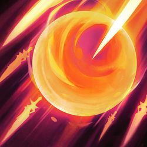
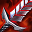
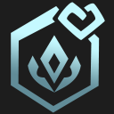

돌아가기
시즌 7 : 용의 땅
용의 성소, 보물 용, 용 챔피언
시즌 7의 핵심 시스템.
ㆍ용의 성소 : 매커니즘은 시즌 6의 마법공학 증강체와 동일하다.
ㆍ보물 용 : 시즌 7에 새로 나온 시스템으로, 기존 4-7라운드에 있던 크립 라운드가 특정 보상을 골라받는 라운드로 변경되었다.
보상 목록은 조합 아이템/완성 아이템/뒤집개/자석 제거기/재조합기/8골드/10골드/챔피언 복제기/사기 주사위 등으로 조합하여 5개까지이며 어떤 것이 나올지는 무작위이다. 1골드를 소모해서 목록을 새로고침 할 수 있다.
ㆍ용 챔피언 : 동일 코스트 대비 두 배의 비용을 지불해야 하며, 2개의 팀 슬롯을 차지하고, +3의 시너지 특성을 제공한다.
 챔피언 : 1코스트
챔피언 : 1코스트 챔피언 : 2코스트
챔피언 : 2코스트
 챔피언 : 5코스트
챔피언 : 5코스트

챔피언 : 10코스트
아군에게 고유 보너스를 부여한다.
길드 아군은 두 배로 얻는다.
전장의 길드 아군마다 증가한다.
별 팀을 구성한 후 상점이 5번 열릴 때마다 별 챔피언이 등장할 확률이 증가하며 보너스 별의 구를 획득한다.
구의 가치는 마지막으로 구성한 별 특성 단계에 따라 달라진다.
아군이 추가 주문력을 얻는다.
고유 : 마나를 분노로 전환한다.
기본 공격 시 분노를 15 생성하며 스킬을 사용하면 4초 동안 격분한다.
격분 시 공격 속도가 25% 증가하지만, 분노를 얻을 수 없다.
격분 시 보너스 능력치 획득 :
아군에 용이 없을 경우 비늘혐오자 챔피언이 추가 마법 피해를 입힌다.
또한 체력이 2200 이상인 적에게 받는 피해량이 20% 감소한다.
점점 강해지는 비취 조각상을 소환하며, 비취 조각상은 이동 가능하다.
전투마다 조각상 주변에서 전투를 시작하는 아군이 추가 공격 속도를 얻으며 2초마다 최대 체력 회복량을 얻는다. 조각상이 파괴되면 조각상 체력의 33%에 해당하는 마법 피해를 주변 적에게 입힌다.
무작위로 빛비늘 한정 아이템을 부여한다.
 결단력 있는 투자자
결단력 있는 투자자
 황금술사의 지팡이
황금술사의 지팡이
빛비늘의 최종 아이템
속삭임이 피해를 입힌 적은 움츠러들며 6초 동안 방어력과 마법 저항력이 40% 감소한다.
움츠러든 적에게 피해를 입힌 속삭임은 중첩되는 공격력과 주문력을 얻는다.
신기루의 효과는 게임마다 변경된다.
공격을 하거나 당하면 일정 확률로 인접한 적에게 최대 체력의 8%만큼 마법 피해를 입힌다.
전투에서 승리하면 추가 체력과 주문력을 획득한다. 승리할 때마다 10% 증가한다. 이 효과는 5번까지 중첩된다.
전투당 한 번 체력이 50%일 때 빠르게 회복한다.
신기루 유닛이 더 빠르게 이동한다.
기본 공격할 때마다 공격 속도가 증가한다. 이 효과는 최대 10번까지 중첩된다.
기본 공격과 스킬 적중 시 체력이 낮은 적에게 항상 치명타를 적용한다. 치명타 피해량이 증가한다.
플레이어와 전투 시 공격할 때마다 주문력을 획득한다.
플레이어가 전투를 마칠 때마다 전리품 상자를 획득한다.
전투 후 조련사가 뇸뇸이에게 별 레벨 하나당 간식을 1개씩 먹여 체력과 주문력을 추가한다. 뇸뇸이의 별 레벨은 간식 25개마다 증가한다.
스킬로 피해를 입힌 후 폭죽을 발사해 무작위 적에게 마법 피해를 입힌다.
8초 후에 전장에 벼락이 내린다. 적이 1초 동안 기절하며, 최대 체력의 일정 비율에 해당하는 고정 피해를 입는다.
폭풍 챔피언이 공격 속도를 얻는다.
고유 : 이동 시 대상에게 빠르게 돌격한다.
기병대가 방어력과 마법 저항력을 얻는다. 전투 시작 및 돌격 이후 4초 동안 이 수치가 200% 증가한다.
아군의 최대 체력이 증가한다. 난동꾼은 두 배로 증가한다.
고유 : 공격 사거리가 2칸 증가한다.
민첩사수와 대상 사이에 놓인 칸 하나당 해당 민첩사수가 공격 속도를 얻는다.
전투당 한 번 체력이 50%일 때 가장 가까운 아군과 자신에게 최대 체력의 일정 비율만큼 피해를 흡수하는 보호막을 씌운다.
보호막은 중첩된다.
아군이 마법 저항력을 얻는다.
고유 : 전투 시작 시 암살자는 적의 후방으로 도약한다.
암살자는 추가 치명타 피해량과 확률을 획득하며, 스킬에 치명타가 적용될 수 있다.
요술사는 스킬을 두 번 사용하고 총 주문력이 조정된다.
고유 : 2개의 팀 슬롯이 필요하다.
용술사의 축복을 사용해 영웅을 선택한다. 영웅의 체력과 주문력이 용술사의 별 레벨 하나당 20%씩 증가한다.
아군 또는 적이 스킬을 사용할 때마다 일깨우는 자가 마나를 얻는다.
전사가 공격 시 50%의 확률로 다음 공격의 피해량이 증가한다.

조이가 1.5초 동안 체력 비율이 가장 낮은 아군 수 명을 피해 면역 상태로 만들고 전투가 끝날 때까지 해당 아군이 방어력과 마법 저항력을 추가로 얻는다.
대상 수 : 2 / 3 / 10
방어력과 마법 저항력 : 20 / 40 / 20000
조이가 가장 멀리 떨어진 적에게 광선을 발사해 마법 피해를 입힌다.
피해량 : 425 / 650 / 9001
조이가 원뿔 범위에 소용돌이를 발사한다. 적중당한 아군은 5초 동안 공격 속도가 20% 증가하고 적중당한 적은 수 초 동안 공중으로 띄워지고 기절한다.
공격 속도 (%) : 20 / 40 / 500
기절 지속시간(초) : 1.25 / 1.25 / 8
조이가 자신을 위해 싸우는 데이지를 소환하고 주문력의 100%를 부여한다. 데이지가 이미 전투 중이라면 조이가 데이지에게 강타 명령을 내린다.
데이지 체력 : 1600 / 2600 / 10000
강타 피해 : 750 / 1500 / 10000
5번째 공격마다 대포를 발사하고 대상 주변에 폭발을 일으켜 물리 피해를 입힌다.
변신 시 추가 최대 체력을 얻는다.
공격력 +10
 쇠사슬 조끼
쇠사슬 조끼
방어력 +20
체력 +150
주문력 +10
공격 속도 +10%
마나 +15
마법 저항력 +20
치명타 확률 +5%, 회피율 +10%
분명 무슨 효과가 있을 겁니다...
|
|||||||||
|---|---|---|---|---|---|---|---|---|---|
|  |  |
||||||||
|
|||||||||
|
|||||||||
+
+
+
+
+
+
+
무한의 대검
+
+
+
+
+
+
+
+
+
+
+
+
+
+
+
+
+
+
+
+
+
+
+
+
+
+
+
+
+
+
+
+
+
+
+
+
+
+
공격력을 대폭 올려주는 아이템.
솔라리 펜던트와 마찬가지로 기물의 등급에 따라 성능이 오르므로 리롤덱과 궁합이 좋다.
체력이 일정 수치 이하로 떨어지면 어그로를 해제하고 공속까지 늘려준다.
캐리 기물의 생존력을 올려주는 아이템.
적진 뒷쪽으로 뛰어들어 딜을 하는 암살자나 적진 한복판에 떨어져서 딜을 하는 물몸 유닛에게 주면 좋다.
공격 속도 버프를 나눠주는 아이템.
잘만 쓰면 조합에 곡궁 여섯 개 이상을 쥐어준 것과 같은 효과를 볼 수 있다.
공격 속도를 올려주는 아이템인데도 재료로 곡궁이 필요없다는 것도 장점.
자신 외에 다른 아군을 회복시키는 효과도 있어서 지속 딜러에게 부여하여 힐러처럼 사용하는 것도 가능하다.
다만 원하는 기물을 지목할 수 없다.
이름에 걸맞게 최대 체력이 높은 기물을 카운터치는 효과를 가진 아이템.
추가 피해는 장착 챔피언이 입힌 피해의 종류를 따라가며, 따로따로 들어가지 않고 같이 계산되어 적용된다.
스킬 난사를 위한 아이템.
기본 공격을 할 때마다 추가 마나가 주어지니 보다 스킬 발동이 빨라진다.
기본적으로 TFT 챔피언은 공격할 때마다 10의 마나를 회복하므로, 스킬 회전을 80% 빠르게 해준다 볼 수 있다.
고유 효과가 아니라서 여러 개를 가서 회복량을 중첩하는 것도 가능하다.
원본과 다르게 모든 피해 흡혈이라서 마법 피해로도 흡혈이 가능하다.
치명타 빌드의 핵심이 되는 아이템.
고유 효과로 치명타 75%가 주어지니 TFT 기본 치명타 확률 25%와 합쳐지면 장착 챔피언의 모든 공격을 100% 치명타로 바꿀 수 있다.
거기다 추가 치명타 확률에 비례해 피해량을 늘려줘서 다른 치명타 아이템과 궁합이 아주 좋다.
특히 보석 건틀릿과 같이 쓰면 해당 챔피언이 가하는 모든 피해가 늘어나는 엄청난 시너지를 자랑한다.
대신 덤불 조끼를 장착한 챔피언을 상대로는 성능이 크게 감소하니 주의.
치명타 딜러와 근접 딜러를 카운터치는 아이템.
높은 성능을 가진 아이템 중 하나로, 초반부터 확 올라간 방어력과 광역 마법 피해로 연승을 노릴 수 있다.
또한 후반에도 기본 공격/치명타에 한해서는 압도적인 탱킹 능력을 자랑한다.
주변 적에게 치감+고정 도트 피해를 가하는 아이템.
첫 효과는 전투 시작 직후에 발동하며, 효과는 불타는 대상보다 아직 불타지 않은 대상을 우선 지정한다.
불타는 상태에서 다시 효과를 받으면 적용 시간이 갱신될 뿐 중첩되지 않는다.
아군 보호에 특화된 아이템.
보호막이 챔피언의 능력치에 비례하지 않고 등급 비례 수치인지라 리롤덱에서 특히 효율이 좋다.
다만 계수가 없고 고정 수치인데다 늘어나기는 해도 그 수치가 미미한지라 마찬가지로 후반에는 힘이 빠지는 편.
최대 효율을 보려면 일렬로 둬야하니 배치도 까다로워진다.
공격을 하거나 받을 때마다 중첩을 쌓고 중첩 수에 비례해서 착용 챔피언은 공격력과 주문력을 얻는다.
최대 중첩이 되면 추가로 방어력과 마법 저항력이 증가하며 착용 챔피언의 크기가 커진다.
주변 적에게 공속 디버프를 가하는 아이템.
1선에서 화력을 투사하는 근접 캐리 기물을 카운터 칠 수 있다.
탱커에게 주는 것이 일반적이지만, 암살자처럼 적진으로 파고드는 챔피언에게 줘서 뒷라인 딜러진을 포함해 적 진영 전체에 디버프를 넣는 활용법도 있다.
방어력과 마법 저항력을 둘 다 올려주는 탱템.
당연히 방마저를 제공하기 때문에 체력이 높은 유닛과 궁합이 좋으며,
공격 대상이 늘어나면 오르는 수치가 더 높아지기에 핵심 딜러를 포함한 조합의 대부분이 원거리이고 소수로 탱커 라인을 구성할 때 가장 효율이 좋다.
적의 스킬 발동을 지연시키는 아이템.
전투 시작 시 장착 챔피언 전방으로 보라색 광선이 나가서 여기에 닿는 적 챔피언은 마나량이 증가한다.
정확한 적용 범위는 장착 챔피언을 기준으로 가로 한 칸 이내 거리에 있는 모든 칸이다.
광선 안으로 기물이 전부 들어오게 둘 필요없이 스치기만 해도 적용된다.
체력을 대폭 올려주는 아이템.
당연히 늘어난 체력만큼 적의 공격을 더 오래 버틸 수 있게 된다.
능력치만 제공하고 부가 효과는 없으며,
거인 학살자 등 높은 체력을 조건으로 하는 효과에 취약해지는 것이 단점.
스킬로 도트 피해와 치유 감소 효과를 부여하는 아이템.
신속히 여러 명에게 묻히는 게 가장 중요하므로 광역 스킬 딜러에게 주는 게 가장 높은 효율을 낸다.
물리 피해에는 발동하지 않으므로 주의.
장착 유닛에게 공격을 집중시키는 도발 기능과 장착 유닛이 죽을 때 공허 생물을 소환시키는 2가지 효과가 있다.
도발 효과는 딜을 장착 유닛에게 집중시켜 공허 생물의 소환을 빠르게 해준다.
CC기 취급이라 CC 면역인 유닛에게는 통하지 않으며, 전투 시작 시 단발 효과로 적용되는 것이라 먼 거리에서 이동해오는 암살자/기병대 기물에는 걸리지 않는다.
공허 생물은 마나와 스킬이 없는 그냥 크립과 별반 다를게 없다.
엄연히 유닛으로 취급되기 때문에 챔피언들의 스킬이나 시너지 효과를 받을 수 있다.
능력치는 공격 속도가 0.8, 방마저가 각각 20이며, 체력과 공격력은 스테이지에 비례하여 증가한다.
아군의 체력을 회복시킬 수 있는 아이템.
광역 공격 피해 감소도 꽤나 효과가 좋다.
범위가 좁고 발동 주기가 길기 때문에 가능하면 오래 살아남을 수 있고 아군 기물과 잘 붙을 수 있는 기물에게 줘야 효율이 높다.
전투 시작 시 회오리바람이 나타나 적 챔피언 하나를 대상 비지정+무적 상태로 만들고 공중에 띄운다.
위치는 장착 챔피언을 기준으로 중앙점 대칭이며, 그 위치에 없다면 가장 가까운 챔피언에게 적용된다.
밴시의 장막처럼 기물이 적의 스킬을 받지 않게 하는 보호막을 부여한다.
차이점은 모르가나의 블랙 실드처럼 보호막에 내구도가 있으며 이 한도에서만 보호해준다.
주문력을 대폭 부여하는 아이템.
아무런 부가 효과 없이 심플하게 주문력만 올려준다는 점에서 협곡과 대동소이하다.
고유 효과가 아니어서 여러 개를 줘서 주문력을 엄청나게 올릴 수도 있다.
점점 공격 속도를 빠르게 해주는 아이템.
중첩에 제한이 없어서 전투가 길어질수록 무시무시한 위력을 자랑한다.
지속적으로 주문력을 올려주는 아이템.
다만 시간이 필요해서 오래 버틸 수 있는 조합이 필요하다.
스킬 딜러를 카운터치는 아이템.
또한 스킬 딜 중심 조합에서 탱커를 카운터치는 아이템이기도 하다.
일부 챔피언을 제외하면 대부분의 챔피언은 마나와 스킬을 갖고 있고,
죽기 전에 한 번쯤은 스킬을 쓰기 마련인지라 어떤 조합을 상대로도 초중후반을 가리지 않고 높은 효율을 내는 고성능 아이템이다.
스킬 피해량을 증폭시킨다.
짧고도 강력한 효과를 지닌 AP 캐리 기물의 핵심 딜링 아이템이다.
원래 스킬 공격에는 치명타가 적용되지 않지만 해당 아이템을 장착한 챔피언은 스킬 공격에도 기본 공격처럼 치명타가 적용된다.
기본 공격 사거리를 늘려주고 공격이 빗나가지 않게 해주는 아이템.
원본과 달리 사거리 증가 효과가 상시 적용된다.
기본 공격 중심의 챔피언에게 주면 좋다.
일정 횟수를 공격하면 광역 추가 마법 피해를 준다.
공격 속도가 빠른 챔피언과 조합에 찰떡궁합이다.
보통 기본 공격 조합은 물리 피해로만 치중되고 광역 피해가 부족한 단점이 있는데 이를 커버해줄 수 있다.
동시에 여러 적을 공격할 수 있게 해주는 아이템.
투사체 탄환이 기본 공격을 할 때 발사되므로 공속이 빠를수록, 공격력 계수가 있으므로 공격력이 높을수록 효율이 높다.
협곡과 달리 근거리 챔피언도 사용 가능하다.
방어력을 깎아내는 아이템.
원본 최후의 속삭임처럼 방어력을 무시하고 들어가는 것이 아니라, 칠흑의 양날도끼와 더 비슷하다.
아이템 이미지도 최후의 속삭임이 아니라 그 상위 아이템인 필멸자의 운명이다.
시작 마나를 50이나 제공하니 첫 스킬 발동이 더 빨라지고, 스킬 사용 후에 마나를 20 제공하니 이후 스킬 발동 속도도 더 빨라진다.
주문력 버전 지크의 전령.
쓸큰지 없이 주문력을 제공하는 템이라는 점도 비슷하다.
캐리 기물 옆에 놓는 스킬형 보조 기물이나 서브캐리 기물에 넣어주면 좋다.
스킬 딜러를 많이 채용하는 조합과 잘 어울린다.
피흡을 포함하여 여러가지 능력치를 제공한다.
매턴 공격력/주문력 상승 또는 피흡이 상승하는 특이한 효과도 있는데,
강화 효과가 발동하면 붉은 오오라가,
회복 효과가 나오면 황금색 오오라가 나타난다.
장착한 챔피언에게는 푸른 보호막이 씌워진다.
스킬 중심의 딜러를 카운터치는 아이템.
군중 제어 효과를 막아주는 아이템.
CC기가 걸리면 해제하는 것이 아니라 모르가나의 블랙 쉴드처럼 아예 내성이 된다.
매 턴 무작위로 재료템 1개+완성템 1개 또는 완성템 2개를 얻는다.
처음 장비할 때는 랜덤하게 나오고, 이후 준비 단계마다 장착한 챔피언이 엄청난 속도로 맵 왼쪽으로 사라졌다가 아이템을 장착하고 돌아온다.
참고로 초반에는 완성템 2개 확률이 낮고 후반으로 갈수록 확률이 오른다.
BㆍF 대검을 재료로 만드는 특성 부여 아이템
쇠사슬 조끼를 재료로 만드는 특성 부여 아이템
거인의 허리띠를 재료로 만드는 특성 부여 아이템
쓸데없이 큰 지팡이를 재료로 만드는 특성 부여 아이템
곡궁을 재료로 만드는 특성 부여 아이템
여신의 눈물을 재료로 만드는 특성 부여 아이템
음전자 망토를 재료로 만드는 특성 부여 아이템
연습용 장갑을 재료로 만드는 특성 부여 아이템
뒤집개 2개를 재료로 만드는 특성 부여 아이템.
능력치는 전혀 없지만 챔피언을 추가로 1명 더 배치할 수 있게 해주는 강력한 효과를 갖고 있다.
한 번 사용하면 사라지는 일회용 아이템이다.
뒤집개 아이템과 마찬가지로 특성을 부여한다.
하지만 조합하여 만들 수 없고 오직 무기고나 공동 선택 단계, 증강체에서만 얻을 수 있다.
모든 아이템은 체력 150의 능력치를 가지며, [진귀 - 제작 불가]라는 텍스트가 있다.
체력 +150,
장착 시 길드 특성 획득
[고유 - 중복 적용 불가] ※길드 보너스 : 모든 피해 흡혈 6%
[진귀 - 제작불가]
체력 +150,
장착 시 난동꾼 특성 획득
[고유 - 중복 적용 불가]
[진귀 - 제작불가]
체력 +150,
장착 시 민첩사수 특성 획득
[고유 - 중복 적용 불가]
[진귀 - 제작불가]
체력 +150,
장착 시 비늘혐오자 특성 획득
[고유 - 중복 적용 불가]
[진귀 - 제작불가]
체력 +150,
장착 시 비취 특성 획득
[고유 - 중복 적용 불가]
[진귀 - 제작불가]
체력 +150,
장착 시 속삭임 특성 획득
[고유 - 중복 적용 불가]
[진귀 - 제작불가]
체력 +150,
장착 시 일깨우는 자 특성 획득
[고유 - 중복 적용 불가]
[진귀 - 제작불가]
체력 +150,
장착 시 전사 특성 획득
[고유 - 중복 적용 불가]
[진귀 - 제작불가]
체력 +150,
장착 시 전설 특성 획득
[고유 - 중복 적용 불가]
[진귀 - 제작불가]
체력 +150,
장착 시 폭풍 특성 획득
[고유 - 중복 적용 불가]
[진귀 - 제작불가]
체력 +150,
장착 시 별 특성 획득
[고유 - 중복 적용 불가]
[진귀 - 제작불가]
체력 +150,
장착 시 포병대 특성 획득
[고유 - 중복 적용 불가]
[진귀 - 제작불가]
체력 +150,
장착 시 신비술사 특성 획득
[고유 - 중복 적용 불가]
[진귀 - 제작불가]

체력 +150,
장착 시 축제 특성 획득
[고유 - 중복 적용 불가]
[진귀 - 제작불가]
부가 효과는 없지만, 마나와 회피율을 제외한 모든 능력치를 올려준다.
모든 능력치를 올려주는만큼 유물템 중에서 가장 범용성이 높다.
원본처럼 일정 체력 이하의 적을 공격하면 높은 수치의 고정 피해가 떠서 적을 처형하며,
시즌3 우주 해적처럼 골드가 결투장 안에 떨어진다.
잘 활용하면 주변 적 기물들을 전부 골드로 바꿔버리는 압도적인 위력을 보여줄 수 있다.
유물 아이템 중 가장 사기라고 평가받는 아이템.
적당히 단단한 유닛에게 넣어주면 맵 전체에 얼어붙은 심장을 깐 효과를 볼 수 있다.
원본과 다르게 무적 상태에서도 행동이 가능하다.
원본아이템 존야의 모래시계 보다는 시즌 2의 강철 효과와 비슷하다.
블리츠크랭크의 로켓 손 스킬이다.
활용법과 카운터 역시 정확히 같다.
서풍처럼 전투 시작 시에 발동하므로 전투 중에 넣으면 효과가 발동하지 않는다.
딜러 저격에 좋은 효과이기는 하나,
수은이나 배치로 대처가 쉬운지라 한두번 써먹고 능력치만 약간 올려주는 정도의 성능이다.
원본과 비슷하지만 방어력 뿐 아니라 마법 저항력까지 감소시켜준다.
광역으로 피해를 주는 기물과 잘 맞는다.
시즌 1의 수호자처럼 주변 1칸 이내의 아군에게 방어력과 마법 저항력을 제공한다.
스킬을 시전하면 마나가 빠르게 차올라 바로 2번째 스킬을 쓰게 해준다.
푸른 파수꾼과 다르게 전투당 한 번만 발동하는 것에 유의.
원본처럼 받은 피해를 유예시키고 흡혈을 시켜주는 효과를 갖고 있다.
이전 워모그의 효과와 비슷하다.
잃은 체력이 아니라 최대 체력이고 수치도 높아서 체감 성능은 훨씬 더 좋다.
시즌 5.5부터 등장한 핵심 시스템.
완성 아이템에서 보다 강화된 능력치와 효과를 갖고 있다.
찬란한 아이템은 재료아이템의 조합으로 제작할 수 없으며 그림자 아이템과 달리
패널티 없이 강력한 성능을 가진 아이템이다.
시즌 6가 되면서 삭제되었지만 시즌 6.5부터 증강체로부터 다시 얻을 수 있게 되었다.
시즌 5.5에서는 적 처치 관여 시마다 전투가 끝날 때까지 공격력이 15 증가하고 4스택(총 공격력 80)으로 시작하는 효과였지만
시즌 6.5에 재출시된 후에는 리워크된 죽음의 검처럼 등급별 공격력 증가 효과를 가지게 되었다.
시즌 6.5에서 수호 대천사 대신 새롭게 추가된 찬란한 아이템.
은신 상태가 두 번 터질 수 있고, 공격 속도 증가도 중첩되기 때문에 버티기 좋은 템이다.

추가 공격 속도가 더 올라가고 생명력 흡수가 추가되었다.
기본 총검의 흡혈 수치를 올리고, 불멸의 마법공학 총검 효과와 추가 주문력까지 더해졌다.
광역 스킬 딜러에게 주면 아군 조합 전체가 엄청난 유지력을 얻게 된다.

11.16 패치에서 추가 피해량이 35%에서 40%로 상향되었다.
그림자 쇼진보다 더 강화된 마나수급 효과에 디메리트도 사라졌다.


적용 시간, 초당 피해량, 범위 모두 늘어났다.
1열 정중앙에 두면 필드의 모든 적들을 불태우는게 가능하다.

최대 중첩시 공격력과 주문력 75, 방어력과 마법 저항력 50의 스펙을 얻는 딜탱 아이템.
공속 감소율이 늘었고, 추가 마나를 제공하게 되었다.

광선이 굵어져서 맵 절반을 덮으며, 효과도 50%로 증가했다.
거기다 모든 아군의 마나를 15씩 올려주기까지 한다.
하지만 원본처럼 굳이 쓰기에는 애매한 성능.


원본 템과 비교하여 적용 시간과 총 피해량이 크게 늘었다.

공허 생물이 유닛이 죽은 후가 아니라 바로 튀어나오며,
능력치가 엄청나게 강화되어 있다. (체력 2배, 공격력 1.5배)
외형도 몸 전체가 황금색으로 바뀌어있다.
시즌 6.5에서부터 '예견' 증강체를 통해 가장 쉽게 구할 수 있는 유물템이 되었다.
지속 시간이 8초로 너프되었다.


사거리 너프 전 고속 연사포의 위엄을 재현할 수 있다.
자체적으로 제공하는 공격 속도도 75%나 되기 때문에 공속템으로써의 성능도 좋은 편.

방어력을 깎는 시간이 무제한이 되고 추가 치명타 확률을 제공한다.

원본보다 높은 수치로, 둘 중 하나가 아니라 둘을 전부 부여한다.
시즌7에서는 컨셉을 위해 용이 착용할 경우 모든 효과가 20% 증가한다.


무작위템이 찬란한 아이템이 된다.
하나만으로도 우월한 성능을 보이는 찬란한 아이템을 2개나 쓰기에,
무작위라는 점을 고려하더라도 엄청나게 좋은 효과이다.
시즌 7의 시너지 중 하나인 빛비늘 시너지 전용 아이템이다.
골드를 획득하거나 보유한 골드량에 비례해 능력치를 향상시키는 효과를 가졌다.
결단력 있는 투자자
황금술사의 지팡이
빛비늘의 최종 아이템
| 실버 - 실버 - 골드 | 30% |
| 실버 - 실버 - 프리즘 | 9% |
| 실버 - 골드 - 골드 | 15% |
| 실버 - 골드 - 프리즘 | 4% |
| 실버 - 프리즘 - 실버 | 4% |
| 골드 - 실버 - 실버 | 10% |
| 골드 - 실버 - 골드 | 10% |
| 골드 - 실버 - 프리즘 | 4% |
| 골드 - 골드 - 골드 | 4% |
| 골드 - 골드 - 프리즘 | 4% |
| 프리즘 - 실버 - 골드 | 2% |
| 프리즘 - 실버 - 프리즘 | 1% |
| 프리즘 - 골드 - 골드 | 2% |
| 프리즘 - 프리즘 - 프리즘 | 1% |
| 증강체 명 | 기능 |
|---|---|
강인함 |
난동꾼이 매초 최대 체력의 2.5%를 회복한다. 세주아니를 획득한다. |
천상의 축복 Ⅰ |
아군 유닛이 공격과 스킬로 입힌 피해의 12%만큼 체력을 회복한다. 초과된 회복량은 최대 300의 피해를 흡수하는 보호막으로 전환된다. |
사이버네틱 이식술 Ⅰ |
아이템을 가진 챔피언이 125의 체력과 8의 공격력을 얻는다. |
사이버네틱 외피 Ⅰ |
아이템을 가진 챔피언이 125의 체력과 20의 방어력을 얻는다. |
사이버네틱 통신 Ⅰ |
아이템을 장착한 아군 챔피언이 125의 체력을 얻고 매초 2의 마나를 회복한다. |
추방자 Ⅰ |
인접한 아군 없이 전투를 시작하는 아군은 10초 동안 최대 체력의 25%에 해당하는 보호막을 획득한다. |
단결된 의지 Ⅰ |
아군 유닛이 전체적으로 활성화된 특성 하나당 2의 공격력과 주문력을 획득한다. |
고전압 Ⅰ |
아군 유닛이 치명타를 입으면 주변 적에게 50~110(현재 스테이지에 비례)의 마법 피해를 입힌다. (재사용 대기시간 1초) |
경량급 Ⅰ |
비용이 1과 2인 챔피언이 25%의 공격 속도 및 이동 속도를 획득한다. |
 응급처치 키트 |
아군 유닛이 받는 모든 회복 효과와 보호막 효과가 25% 증가한다. |
아이템 꾸러미 Ⅰ |
무작위 완성 아이템 1개를 획득한다. |
루덴의 메아리 Ⅰ |
아군 유닛이 스킬을 사용해 스킬 피해를 입히면 처음 적중한 대상과 그 주변 적 하나가 40~130(현재 스테이지에 비례)의 추가 마법 피해를 입는다. |
임시변통 방어구 Ⅰ |
아이템이 없는 아군 유닛이 30의 방어력과 마법 저항력을 얻는다. |
명상 Ⅰ |
아이템을 장착하지 않은 아군 유닛이 매초 4의 마나를 회복한다. |
판도라의 아이템 |
무작위 조합 아이템을 획득한다. 라운드 시작 시 대기석의 아이템이 무작위로 변합니다. (전략가의 왕관, 뒤집개, 소모품 제외) |
대격변 생성기 |
전장에 있는 챔피언들이 비용이 1 높은 무작위 챔피언으로 영구히 바뀐다. 자석 제거기 2개를 획득한다. |
재생의 바람 Ⅰ |
전투 시작 10초 후 아군 유닛이 잃은 체력의 40%를 회복한다. |
사냥의 전율 Ⅰ |
아군 유닛이 적을 처치하면 400의 체력을 회복한다. |
꼬마 거인 |
전략가가 체력을 30 회복하고, 크기가 커지고, 최대 체력이 130까지 증가한다. |
다른 태생 Ⅰ |
활성화된 특성이 없는 아군 유닛이 250~400의 체력과 40~70%의 공격 속도를 얻는다. (현재 스테이지에 비례) |
3에 깃든 힘 Ⅰ |
아군 3단계 유닛의 체력이 133, 시작 마나가 13, 공격 속도가 13% 증가한다. |
문제가 두 배 Ⅰ |
전장에 똑같은 챔피언이 정확히 둘 있다면 둘 다 공격력, 주문력, 방어력, 마법 저항력이 22 상승한다. 챔피언을 3성으로 업그레이드하면 동일한 2성 챔피언 하나를 획득한다. |
약점 Ⅰ |
아군 유닛이 공격 시 5초 동안 대상 방어력의 20%를 무시하고 대상이 받는 회복 효과를 50% 감소시킨다. |
자리 비움 |
다음 3라운드 동안 아무 행동을 취할 수 없다. 이후에 20골드를 획득한다. |
암살자 심장 |
팀에 암살자 1명이 추가로 포함된 것으로 간주한다. 케인을 획득한다. |
별 심장 |
팀에 별 1명이 추가로 포함된 것으로 간주한다. 나미를 획득합니다. |
원칙의 원형낫 Ⅰ |
아군 유닛이 적 처치 시 20 마나를 획득한다. |
도둑 무리 Ⅰ |
도적의 장갑 1개를 획득한다. |
최고의 친구 Ⅰ |
서로가 유일하게 인접한 상태에서 전투를 시작하는 아군 유닛은 공격 속도가 10% 증가하고 15의 방어력을 얻는다. |
커다란 친구 |
체력이 2000이상인 유닛 옆에서 전투를 시작하는 유닛은 남은 전투 시간 동안 10%의 피해를 덜 받는다. |
난동꾼 심장 |
팀에 난동꾼 1명이 추가로 포함된 것으로 간주한다. 쉔을 획득한다. |
포병대 심장 |
팀에 포병대 1명이 추가로 포함된 것으로 간주한다. 트리스타나를 획득한다. |
기병대 심장 |
팀에 기병대 1명이 추가로 포함된 것으로 간주한다. 릴리아를 획득한다. |
일깨우는 자 심장 |
팀에 일깨우는 자 1명이 추가로 포함된 것으로 간주한다. 룰루를 획득한다. |
수호자 심장 |
팀에 수호자 1명이 추가로 포함된 것으로 간주한다. 쓰레쉬를 획득한다. |
길드 심장 |
팀에 길드 1명이 추가로 포함된 것으로 간주한다. 트위치를 획득한다. |
|  비취 문장 |
비취 상징과 애쉬를 획득한다. |
후반 전문가 |
9레벨에 도달하면 40골드를 획득한다. |
요술사 심장 |
팀에 요술사 1명이 추가로 포함된 것으로 간주한다. 나미를 획득한다. |
신기루 심장 |
팀에 신기루 1명이 추가로 포함된 것으로 간주한다. 요네를 획득한다. |
신비술사 심장 |
팀에 신비술사 1명이 추가로 포함된 것으로 간주한다. 나미를 획득한다. |
준비 Ⅰ |
대기석의 챔피언은 라운드마다 영구적으로 6의 공격력과 주문력을 획득하며, 최대 24까지 증가한다. |
분노날개 심장 |
팀에 분노날개 1명이 추가로 포함된 것으로 간주한다. 쉔을 획득한다. |
축제 심장 |
팀에 축제 1명이 추가로 포함된 것으로 간주한다. 징크스를 획득한다. |
비늘혐오자 심장 |
팀에 비늘혐오자 1명이 추가로 포함된 것으로 간주한다. 브라움을 획득한다. |
형상변환자 심장 |
팀에 형상변환자 1명이 추가로 포함된 것으로 간주한다. 나르를 획득한다. |
빛비늘 문장 |
빛비늘 상징과 케인을 획득한다. |
민첩사수 심장 |
팀에 민첩사수 1명이 추가로 포함된 것으로 간주한다. 트위치를 획득한다. |
폭풍 심장 |
팀에 폭풍 1명이 추가로 포함된 것으로 간주한다. 키아나를 획득한다. |
전사 심장 |
팀에 전사 1명이 추가로 포함된 것으로 간주한다. 요네를 획득한다. |
속삭임 심장 |
팀에 속삭임 1명이 추가로 포함된 것으로 간주한다. 쓰레쉬를 획득한다. |
| 증강체 명 | 기능 |
|---|---|
전투 훈련 Ⅰ |
챔피언이 적 유닛을 처치할 때마다 영구적으로 1의 공격력을 획득한다. 챔피언이 8의 추가 공격력을 가지고 시작한다. |
 초월 |
전투 15초 후 아군 유닛의 피해량이 50% 증가한다. |
연막 |
암살자의 체력이 처음으로 70%로 떨어지면 잠시 은신에 들어가 대상으로 지정할 수 없는 상태가 되고 모든 해로운 효과가 사라진다. 이때 초과 피해량이 60% 감소한다. 탈론을 획득한다. |
파란색 배터리 |
스킬 사용 후 시전자가 20의 마나 상태가 된다. |
계산된 패배 |
전투에서 패배한 후 2골드와 무료 상점 새로고침 1회를 획득한다. |
천상의 축복 Ⅱ |
아군 유닛이 공격과 스킬로 입힌 피해의 20%만큼 체력을 회복한다. 초과된 회복량은 최대 450의 피해를 흡수하는 보호막으로 전환된다. |
맑은 정신 |
라운드 종료 시 대기석에 챔피언이 없다면 3의 경험치를 획득한다. |
재료 꾸러미 |
무작위 조합 아이템 3개를 획득한다. |
사이버네틱 이식술 Ⅱ |
아이템을 가진 챔피언이 200의 체력과 15의 공격력을 얻는다. |
사이버네틱 외피 Ⅱ |
아이템을 장착한 아군 챔피언이 200의 체력과 30의 방어력을 얻는다. |
사이버네틱 통신 Ⅱ |
아이템을 장착한 아군 챔피언이 200의 체력을 얻고 매초 3의 마나를 회복한다. |
추방자 Ⅱ |
인접한 아군 없이 전투를 시작하는 아군은 10초 동안 최대 체력의 35%에 해당하는 보호막을 획득한다. |
단결된 의지 Ⅱ |
아군 유닛이 전체적으로 활성화된 특성 하나당 3의 공격력과 주문력을 획득한다. |
고전압 Ⅱ |
아군 유닛이 치명타를 입으면 주변 적에게 85~145(현재 스테이지에 비례)의 마법 피해를 입힌다. (재사용 대기시간 1초) |
경량급 Ⅱ |
비용이 1과 2인 챔피언이 35%의 공격 속도 및 이동 속도를 획득한다. |
예견 Ⅰ |
다음에 싸울 상대를 알 수 있다. 서풍을 획득한다. |
초고속 모드 |
라운드 종료 시 가진 골드가 20보다 적다면 2골드를 획득한다. |
보석 연꽃 |
아군 스킬의 마법 및 고정 피해에 치명타가 적용될 수 있다. 아군 유닛의 치명타 확률이 25% 증가한다. |
루덴의 메아리 Ⅱ |
아군 유닛이 스킬을 사용해 스킬 피해를 입히면 처음 적중한 대상과 그 주변 적 하나가 55~160(현재 스테이지에 비례)의 추가 마법 피해를 입는다. |
 임시변통 방어구 Ⅱ |
아이템이 없는 아군 유닛이 45의 방어력과 마법 저항력을 얻는다. |
명상 Ⅱ |
아이템을 장착하지 않은 아군 유닛이 매초 6의 마나를 회복한다. |
대사 촉진제 |
전략가가 더 빠르게 움직이고, PVP 라운드가 끝날 때마다 2의 체력을 회복한다. |
휴대용 대장간 |
무기고를 열고 오른이 만든 고유 유물 3개 중 하나를 선택한다. |
부익부 |
10골드를 획득한다. 최대 이자가 7골드로 증가한다. |
부익부+ |
15골드를 획득한다. 최대 이자가 7골드로 증가한다. |
재활용 쓰레기통 |
무작위 완성 아이템을 획득한다. 챔피언을 판매하면 모든 아이템이 조합 아이템으로 분해된다. (전략가의 왕관 제외) |
재생의 바람 Ⅱ |
전투 시작 10초 후 아군 유닛이 잃은 체력의 60%를 회복한다. |
태양불꽃판 |
전투 시작 시 모든 적을 불태워 15초 동안 대상 최대 체력의 15%만큼 피해를 입히고 받는 회복 효과를 50% 감소시킨다. |
허수아비 전선 |
2개의 훈련 봇을 획득한다. |
삼총사 |
무작위 3단계 챔피언 3명을 획득한다. |
사냥의 전율 Ⅱ |
아군 유닛이 적을 처치하면 700의 체력을 회복한다. |
고대의 기록 보관소 Ⅰ |
특성의 고서 1개를 획득한다. |
교환의 장 |
라운드마다 무료 상점 새로고침을 획득한다. |
교환의 장+ |
라운드마다 무료 상점 새로고침을 획득한다. 즉시 8골드를 획득한다. |
다른 태생 Ⅱ |
활성화된 특성이 없는 아군 유닛이 300~600의 체력과 50~80%의 공격 속도를 얻는다. (현재 스테이지에 비례) |
3에 깃든 힘 Ⅱ |
아군 3단계 유닛의 체력이 233, 시작 마나가 23, 공격 속도가 23% 증가한다. |
곱빼기 |
무작위 2성 1단계 챔피언 1명과 무작위 2성 2단계 챔피언 1명을 획득한다. |
문제가 두 배 Ⅱ |
전장에 똑같은 챔피언이 정확히 둘 있다면 둘 다 공격력, 주문력, 방어력, 마법 저항력이 33 상승한다. 챔피언을 3성으로 업그레이드하면 동일한 2성 챔피언 하나를 획득한다. |
자객 |
암살자들이 첫 공격 대상의 마나를 강탈하여 대상이 스킬을 사용하기 전까지 최대 마나가 50% 증가한다. 마나가 회복된 대상에게 10%의 추가 피해를 입힌다. 키아나를 획득한다. |
암살자 문장 |
암살자 상징과 케인을 획득한다. |
우주의 선물 |
별 구체가 50% 확률로 보너스 전리품을 포함하는 작은 별 구체를 생성한다. 나미를 획득한다. |
원칙의 원형낫 Ⅱ |
아군 유닛이 적 처치 시 30 마나를 획득한다. |
최고의 친구 Ⅱ |
서로가 유일하게 인접한 상태에서 전투를 시작하는 아군 유닛은 공격 속도가 20% 증가하고 25의 방어력을 얻는다. |
커다란 친구 Ⅱ |
체력이 2000이상인 유닛 옆에서 전투를 시작하는 유닛은 남은 전투 시간 동안 18%의 피해를 덜 받는다. |
난동꾼 문장 |
난동꾼 상징과 타릭을 획득한다. |
개인 트레이닝 |
라운드 종료 시 난동꾼과 인접해 전투를 시작한 챔피언은 영구적으로 30의 체력을 얻고, 생존 시 추가로 20 증가한다. 쉔을 획득합니다. |
거대한 힘 |
난동꾼이 체력의 1.5%에 해당하는 공격력을 획득한다. 탐 켄치를 획득한다. |
포병대 문장 |
포병대 상징과 징크스를 획득한다. |
화끈한 포격 |
포병대의 공격이 대상을 불태워 최대 체력의 8%에 달하는 고정 피해를 2초간 입히고 지속 시간 동안 모든 체력 회복 효과를 50% 감소시킨다. 트리스타나를 획득한다. |
도탄 |
포병대의 공격이 1회 튕기며 데미지가 33% 감소된 피해를 입힌다. 트리스타나를 획득한다. |
파멸의 돌격 |
돌격 후 기병대의 첫 번째 공격은 85의 마법 피해를 입히며, 방어력과 마법 저항력이 1%씩 증가한다. 릴리아를 획득한다. |
기병대 문장 |
기병대 상징과 세주아니를 획득한다. |
어수선한 마음 |
라운드 종료 시 대기석이 가득 찼다면 4의 경험치를 획득한다. |
용 동맹 |
용 특성이 용의 수에 상관없이 항상 활성화된다. 용은 60의 방어력과 마법 저항력을 얻는다. 무작위 4단계 용을 하나 획득한다. |
용의 부족 |
용 특성이 용의 수에 상관없이 항상 활성화된다. 용은 30의 공격력과 주문력을 얻는다. 무작위 4단계 용을 하나 획득한다. |
용술사 문장 |
용술사 상징과 애쉬를 획득한다. |
고무 |
용술사 영웅이 처치 관여 시 해당 용술사 영웅과 특성을 공유하는 챔피언은 4초 동안 공격 속도가 70% 증가한다. 애쉬를 획득한다. |
 일깨우는 자 문장 |
일깨우는 자 상징과 룰루를 획득한다. |
정기 흡수 |
일깨우는 자의 공격은 대상의 마나 5를 훔친다. 룰루를 획득한다. |
응급처치 키트 Ⅱ |
아군 유닛이 받는 모든 회복 효과와 보호막 효과가 35% 증가한다. |
기계 전문가 |
직접 피해를 입히는 아이템이 33%의 추가 고정 피해를 입힌다. 스태틱의 단검을 획득한다. |
수호자 문장 |
수호자 상징과 브라움을 획득한다. |
영웅적인 존재 |
수호자가 2초마다 범위 내의 모든 적을 도발한다. 수호자의 보호막을 공격하는 적에게 보호막이 적용된 유닛 최대 체력의 7%에 해당하는 마법의 피해를 입힌다(초당 최대 1회). 쓰레쉬를 획득한다. |
길드 문장 |
길드 상징과 트위치를 획득한다. |
장비 강화 |
아이템을 소지한 길드 챔피언이 25의 방어력과 250%의 길드 보너스를 얻는다. 트위치를 획득한다. |
전리품의 달인 |
최소 길드 특성이 2단계 이상 활성화되어 있으면 4번의 플레이어 전투마다 무작위 조합 아이템을 획득한다. 트위치를 획득한다. |
영원한 보호 |
비취 챔피언 중 하나가 사망할 때, 가장 가까운 비취 조각상이 보호하여 최대 체력의 70%를 희생하고 해당 챔피언에게 희생한 체력의 150%만큼 전달한다. 애쉬를 획득한다. |
회개 |
비취 조각상을 최초로 공격하거나 비취 조각상의 폭발로 피해를 입은 적은 2.5초간 무장해제 된다. 나르를 획득한다. |
비취 심장 |
팀에 비취 1명이 추가로 포함된 것으로 간주한다. 나르를 획득한다. |
최후의 저항 |
처음 죽음에 이르렀을 때 죽지 않고 체력이 1이 된다. 이 효과 발동 후 유닛은 200 체력, 20 방어력과 마법 저항력, 그리고 20% 흡혈을 얻게 된다. |
 요술사 회담 |
요술사 특성이 활성화되어 있는 동안 플레이어와의 전투 후 무작위 마법사가 대기석에 추가된다. 릴리아를 획득한다. |
요술사 문장 |
요술사 상징과 블라디미르를 획득한다. |
집단 강화 |
팀에 이로운 효과를 부여하는 오오라 아이템의 효과가 33% 증가한다. 강철의 솔라리 펜던트를 획득한다. |
신기루 문장 |
신기루 상징과 누누를 획득한다. |
환각 |
전투 시작 후 6초 동안 신기루 챔피언이 90% 감소된 피해를 입는다. 요네를 획득합니다. |
판도라의 대기석 |
5골드를 획득한다. 매 턴이 시작될 때마다 대기석의 가장 오른쪽으로부터 3명 챔피언은 동일한 비용의 무작위 챔피언으로 변신한다. |
준비 Ⅱ |
대기석의 챔피언은 라운드마다 영구적으로 7의 공격력과 주문력을 획득하며, 최대 28까지 증가한다. |
분노날개 문장 |
분노날개 상징과 케인을 획득한다. |
작열 |
분노날개 챔피언의 5번 피해를 입힐 때마다 피해량이 33% 증가하고 고정 피해로 전환된다. 케인을 획득한다. |
짜증내기 |
첫 스킬을 사용한 후 분노날개 챔피언이 최대 분노의 100% 만큼 회복한다. 케인을 획득한다. |
축제 문장 |
축제 상징과 징크스를 획득한다. |
축제 경품 |
매 전투에서 축제 챔피언에 의해 6개 폭죽이 발사 될 때마다 1골드를 얻는다. 추가로 총 100개의 폭죽이 처음으로 발사 될 때 특별한 상을 획득한다. 징크스를 획득한다. |
축제 시간! |
축제 챔피언이 처치에 관여하면 4초 동안 80% 공격 속도를 얻는다. 징크스를 획득한다. |
비늘혐오자 문장 |
비늘혐오자 상징과 브라움을 획득한다. |
짐승 소굴 |
최소 2명의 형상변환자 옆에서 전투를 시작한 유닛은 35% 공격 속도와 이동 속도를 얻는다. 형상변환자는 항상 이 효과를 받는다. 나르를 획득한다. |
무모한 소비 |
준비 단계에서 새로 고침과 경험치를 둘 다 구매했다면, 다음 전투에서 빛비늘 챔피언 및 빛비늘 아이템을 지닌 챔피언의 피해량이 40% 상승한다. 케인을 획득한다. |
빛비늘 심장 |
팀에 빛비늘 1명이 추가로 포함된 것으로 간주한다. 케인을 획득한다. |
민첩사수 문장 |
민첩사수 상징과 애쉬를 획득한다. |
집중공격 |
민첩사수의 공격은 대상에게 5초 동안 지속되는 스택을 적용한다. 3번째 스택이 중첩되면, 스택을 모두 소진하여 대상 최대 체력의 5%에 해당하는 고정 피해를 입힌다. 트위치를 획득한다. |
폭풍 문장 |
폭풍 상징과 키아나를 획득한다. |
폭풍의 눈 |
전투가 시작되면, 전장 중앙에 있는 유닛이 40의 주문력을 얻고 폭풍의 번개가 내리친 후엔 주문력이 120까지 증가한다. 키아나를 획득한다. |
우르프의 꾸러미 Ⅰ |
뒤집개 1개와 무작위 조합 아이템 1개를 획득한다. |
전사 문장 |
전사 상징과 쉔을 획득한다. |
티아맷 |
전사의 추가 공격이 대상 주변의 1칸 영역에 있는 적들에게 50%에 해당하는 피해를 입힌다. 요네를 획득한다. |
속삭임 문장 |
속삭임 상징과 쓰레쉬를 획득한다. |
| 증강체 명 | 기능 |
|---|---|
전투 훈련 Ⅱ |
챔피언이 적 유닛을 처치할 때마다 영구적으로 3의 공격력을 획득한다. 챔피언이 15의 추가 공격력을 가지고 시작한다. |
도둑 무리 Ⅱ |
도적의 장갑 2개를 획득한다. |
이중 공중 보급 |
전투 시작 시 2개의 아이템을 장착한 챔피언에게 임시로 무작위 완성 아이템을 부여한다. 무작위 조합 아이템을 획득한다. |
천상의 축복 Ⅲ |
아군 유닛이 공격과 스킬로 입힌 피해의 35%만큼 체력을 회복한다. 초과된 회복량은 최대 600의 피해를 흡수하는 보호막으로 전환된다. |
사이버네틱 이식술 Ⅲ |
아이템을 가진 챔피언이 300의 체력과 25의 공격력을 얻는다. |
사이버네틱 외피 Ⅲ |
아이템을 장착한 아군 챔피언이 300의 체력과 40의 방어력을 얻는다. |
사이버네틱 통신 Ⅲ |
아이템을 장착한 아군 챔피언이 300의 체력을 얻고 매초 4의 마나를 회복한다. |
추방자 Ⅲ |
인접한 아군 없이 전투를 시작하는 아군은 10초 동안 최대 체력의 50%에 해당하는 보호막을 획득한다. |
단결된 의지 Ⅲ |
아군 유닛이 전체적으로 활성화된 특성 하나당 4의 공격력과 주문력을 획득한다. |
고전압 Ⅲ |
아군 유닛이 치명타를 입으면 주변 적에게 115~235(현재 스테이지에 비례)의 마법 피해를 입힌다. (재사용 대기시간 1초) |
경량급 Ⅲ |
비용이 1과 2인 챔피언이 60%의 공격 속도 및 이동 속도를 획득한다. |
신병 |
최대 팀 규모가 1 증가한다. |
예견 Ⅱ |
다음에 싸울 상대를 알 수 있다. 찬란한 서풍(겨울바람)을 획득한다. |
큰손 |
3개의 사기 주사위와 8골드를 획득한다. |
품격있는 쇼핑 |
현재 플레이어 레벨보다 1레벨 높을 때 나오는 챔피언이 상점에 등장한다. 10골드를 획득한다. |
아이템 꾸러미 Ⅱ |
무작위 완성 아이템 2개와 재조합기 2개를 획득한다. |
루덴의 메아리 Ⅲ |
아군 유닛이 스킬을 사용해 스킬 피해를 입히면 처음 적중한 대상과 그 주변 적 하나가 90~240(현재 스테이지에 비례)의 추가 마법 피해를 입는다. |
임시변통 방어구 Ⅲ |
아이템이 없는 아군 유닛이 65의 방어력과 마법 저항력을 얻는다. |
레벨 업! |
경험치를 구매하면 3의 추가 경험치를 얻는다. 이제 10레벨에 도달할 수 있다. |
명상 Ⅲ |
아이템을 장착하지 않은 아군 유닛이 매초 8의 마나를 회복한다. |
찬란한 유물 |
무기고를 열어 찬란한 아이템 5가지 중 1개를 선택한다. |
진보의 행진 |
라운드마다 추가로 5의 경험치를 획득한다. 더는 골드를 사용해 레벨 업할 수 없다. |
황금 알 |
11턴 안에 부화하는 거대한 황금 알을 획득한다. 플레이어 대상 전투에서 승리하면 부화기 타이머를 한 턴만큼 가속한다. |
현명한 소비 |
상점을 새로고침하면 2의 경험치를 획득한다. |
다른 태생 Ⅲ |
활성화된 특성이 없는 아군 유닛이 400~700의 체력과 60~90%의 공격 속도를 얻는다. (현재 스테이지에 비례) |
3에 깃든 힘 Ⅲ |
아군 3단계 유닛의 체력이 333, 시작 마나가 33, 공격 속도가 33% 증가한다. |
문제가 두 배 Ⅲ |
전장에 똑같은 챔피언이 정확히 둘 있다면 둘 다 공격력, 주문력, 방어력, 마법 저항력이 44 상승한다. 챔피언을 3성으로 업그레이드하면 동일한 2성 챔피언 하나를 획득한다. |
신록의 장막 |
아군 유닛이 전투 시작 후 15초 동안 군중 제어 효과에 면역이 된다. |
뜻밖의 횡재 |
20골드를 획득한다. |
뜻밖의 횡재+ |
30골드를 획득한다. |
뜻밖의 횡재++ |
40골드를 획득한다. |
암살자 왕관 |
암살자 상징, 정의의 손길과 다이애나를 획득한다. |
최고의 친구 Ⅲ |
서로가 유일하게 인접한 상태에서 전투를 시작하는 아군 유닛은 공격 속도가 30% 증가하고 35의 방어력을 얻는다. |
난동꾼 왕관 |
난동꾼 상징, 구원, 사일러스를 획득한다. |
포병대 왕관 |
포병대 상징, 루난의 허리케인과 트리스타나를 획득한다. |
기병대 왕관 |
기병대 상징, 구원과 누누를 획득한다. |
기병대 단합 |
모든 아군 챔피언이 기병대 특성의 효과를 받는다. 기병대의 수는 변하지 않는다. 세주아니를 획득한다. |
저주받은 왕관 |
최대 팀 인원 수가 +2 증가하지만, 전투에서 패배 시 플레이어의 전략가가 받는 피해가 100% 증가한다. |
용술사 영혼 |
용술사 상징, 정의의 손길과 리 신을 획득한다. |
일깨우는 자 왕관 |
일깨우는 자 상징, 쇼진의 창과 애니비아를 획득한다. |
수호자 왕관 |
수호자 상징, 태양불꽃 망토, 브라움을 획득한다. |
길드 왕관 |
길드 상징, 거인 학살자와 라이즈를 획득한다. |
비취 영혼 |
팀에 비취 1명이 추가로 포함된 것으로 간주한다. 거인의 결의와 나르를 획득한다. |
간이 대장간 |
지금 그리고 플레이어 대상 전투 10번마다 무작위 오른 유물을 획득한다. |
요술사 왕관 |
요술사 상징, 쇼진의 창과 라이즈를 획득한다. |
신기루 왕관 |
신기루 상징, 정의의 손길과 누누를 획득한다. |
신비술사 영혼 |
팀에 신비술사 1명이 추가로 포함된 것으로 간주한다. 쇼진의 창과 룰루를 획득한다. |
준비 Ⅲ |
대기석의 챔피언은 라운드마다 12의 공격력과 주문력을 획득하며, 최대 48까지 증가한다. |
 분노날개 왕관 |
분노날개 상징, 구인수의 격노검과 스웨인을 획득한다. |
축제 왕관 |
축제 상징과 징크스를 획득한다. |
잔혹한 계약 |
경험치를 골드 대신 6의 체력으로 구매한다. 라운드마다 체력을 3만큼 회복한다. |
비늘혐오자 왕관 |
비늘혐오자 상징, 정의의 손길과 다이애나를 획득한다. |
형상변환자 영혼 |
팀에 형상변환자 1명이 추가로 포함된 것으로 간주한다. 태양불꽃 망토와 엘리스를 획득한다. |
빛비늘 영혼 |
팀에 빛비늘 1명이 추가로 포함된 것으로 간주한다. 거인의 결의와 볼리베어를 획득한다. |
민첩사수 왕관 |
민첩사수 상징, 구인수의 격노검과 바루스를 획득한다. |
폭풍 왕관 |
폭풍 상징, 스태틱의 단검과 리 신을 획득한다. |
빠른 판단 |
이번 라운드가 끝날 때까지 상점을 무제한 무료 새로고침 할 수 있다. 단, 상점에 효과를 주는 특성 및 증강체의 혜택을 받지 못한다. 8골드를 획득한다. |
고대의 기록 보관소 Ⅱ |
특성의 고서 2개를 획득한다. |
우르프의 꾸러미 Ⅱ |
뒤집개 1개와 무작위 조합 아이템 3개를 획득한다. |
 전사 왕관 |
전사 상징, 거인 학살자, 요네를 획득한다. |
 속삭임 왕관 |
속삭임 상징, 거인의 결의와 사일러스를 획득한다. |